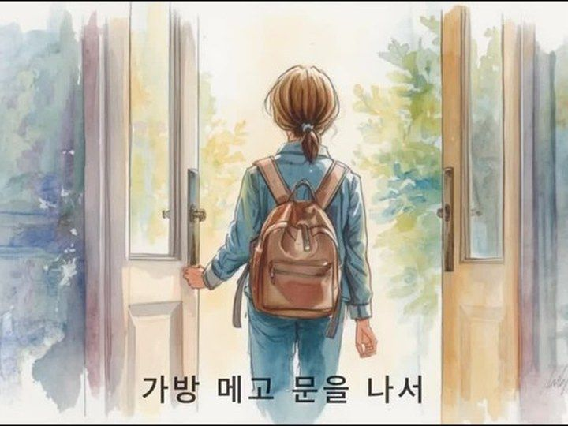
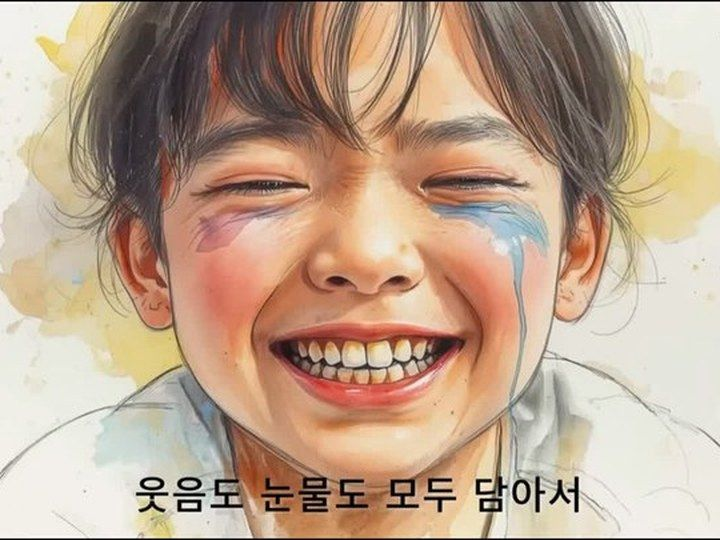
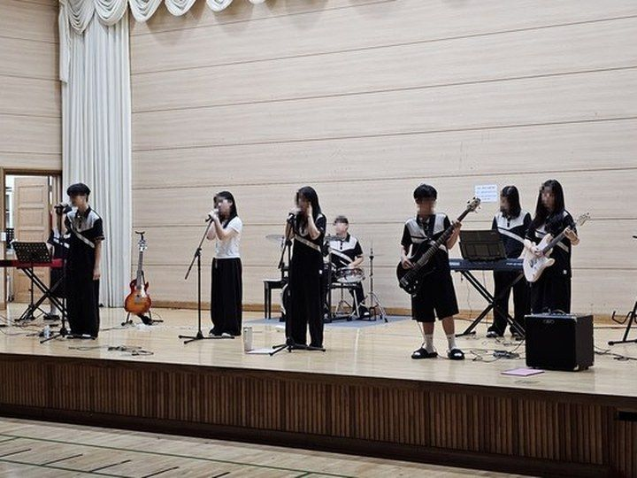
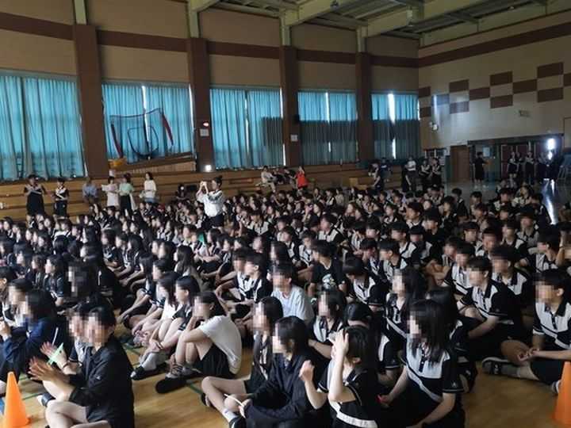

2026. 스마트교육 실천사례 연구대회 보고서
AI로 연결하고, 예술로 실천하며,
진로로 성장하는 BRIDGE-AI 스마트교육
- 소 속
- ○○○○○○○○
- 직 위
- ○○
- 성 명
- ○ ○ ○
2026. 스마트교육 실천사례 연구대회 요약서
AI로 연결하고, 예술로 실천하며, 진로로 성장하는 BRIDGE-AI 스마트교육
1연구의 출발점
| 2026년 3월, 중학교 3학년 192명에게 사전설문 실시 5점 척도 10문항, 평균 3.0이상인 문항은 세 개뿐 | ||||
|---|---|---|---|---|
| "나는 내 생각과 감정을 담아 노래 가사를 만들 수 있다"에 그렇다고 답한 학생은 11.5% 열에 아홉은 "아니다"라고 함. | ||||
| 구분 | 답변내용 | 주요 특징 및 학생 반응 | 평균점수 | 긍정응답률 |
| 장벽 ① | 나는 음악을 못 만들어요 | 악기를 다룰 줄 알아야 창작이라 생각함. 잘하는 몇 명만 하는 수업으로 인식 | 2.31 | 11.5% |
| 장벽 ② | AI가 준 걸 그냥 써요 | 처음 나온 결과를 그대로 제출함. 수업이 단순 체험으로 끝남. | 2.78 | 24.5% |
| 장벽 ③ | 음악은 제 일이 아니에요 | 음악으로 남과 이야기해 본 적이 드물고, 진로 수업도 듣기만 함 | 2.73 | 21.9% |
2네 개의 실천 다리
| 「BRIDGE-AI」 장벽 하나에 BRIDGE 하나, 실천과제 하나 | |||||
| 구분 | 답변 내용 | 주요 특징 및 학생 반응 | 사전 조사 | 우리가 놓은 BRIDGE-AI | |
| 장벽 ① | “나는 못 만들어요” | 악기를 다룰 줄 알아야 창작이라 생각함 잘하는 몇 명만하는 수업으로 인식 | 11.5% 평균 2.31 | 시도하다 | BRIDGE ① |
| 연주 기능이 필요 없는 창작 경로를 만듦 나를 쓰고→곡을 만들고→영상으로 완성하는 네단계 | |||||
| 장벽 ② | “AI가 준 걸 그냥써요” | 처음 나온 결과를 그대로 제출함 수업이 단순체험으로 끝남 | 24.5% 평균 2.78 | 설명하다 | BRIDGE ② |
| 프롬프트를 네 칸으로 나눠 쓰고, 2종 이상 만들어 비교 고른 이유를 음악용어로 쓰게 하고 ,그 기록을 평가 | |||||
| 장벽 ③ | “음악은 제 일이 아니에요” | 음악으로 남과 이야기해 본 적이 드묾 진로수업도 듣기만함 | 21.9% 평균 2.73 | 탐색하다 | BRIDGE ③ |
| 자체 개발 감상 플랫폼으로 시 한 편을 스무 개 시대로 적용 음악산업 12개 분야를 265명 전원이 직접 조사 · 발표 | |||||
| 확 산 | 교실에서 끝나지않도록 | 만든 결과물이 학급 안에서만 소비되고 끝남 | — 조사 문항 없음 | 공유하다 | BRIDGE ④ |
| 소책자와 교내 방송, QR 게시로 실제 청중에게 소개 설치·계정 없는 리릭 비디오 플레이어로 산출물을 배포 | |||||
3연구 문제 및 가설
| 연구문제 ① | 연주 기능을 전제하지 않는 창작 경로를 주면, 최하위였던 창작 자신감이 올라갈까? |
|---|---|
| 가설 ① | 다섯 검증 영역 가운데 창작 역량에서 가장 큰 향상이 나타날 것이다. |
| 연구문제 ② | AI가 준 결과를 고르게 하고 그 이유를 음악 용어로 쓰게 하면, AI 활용과 음악 개념 학습이 함께 갈까? |
| 가설 ② | ‘AI 도구의 주도적 활용’과 ‘음악 분석·감상의 깊이’가 함께 향상될 것이다. |
| 연구문제 ③ | 교사 연구회가 함께 만들고 검증하면, 다른 학교에서도 같은 수업이 재현될까? |
| 가설 ③ | 계정과 설치가 필요 없는 산출물 형식의 배포로 가능할 것이다. |
4연구 설계
| ① 준비 · 설계 | 2026. 3.~5. [완료] |
|---|
| 성취기준을 다시 묶고, 무엇을 확인할지부터 정함. 3학년 전수 사전 실태 조사(3월, 192명) → 세 개의 벽 확인 연구회 사전 모임(5. 13.)에서 수업안 · 활동지 · 루브릭 소개 |
| ② 1차 적용 · 검증 | 2026. 5.~8. [완료] |
| 1학기 ME 프로젝트를 9개 학급 265명에게 적용. 도단위 1차 공개수업 실시(7. 10. 금) · 참관 협의 의견을 다음 차시에 반영 사후 성찰 조사(7.~8., 191명) → 다섯 영역 t-검정 · 효과 크기 산출 |
| ③ 2차 적용 · 확산 | 2026. 9.~12. [예정] |
| 개인의 에세이를 모둠의 뮤지컬로 넓힌다. 설계 완료. 2학기 WE 프로젝트 「Musicalinus」 운영 — 대본 · 본시 과정안 · 평가계획 작성 완료 도단위 2차 공개수업 예정(11. 20. 금) · 결과 정리와 일반화 자료집 배포 예정 |
5「BRIDGE-AI」 스마트교육 수업 모형의 개발
| BRIDGE ① 시도하다 장벽 ① 표현의 장벽 | BRIDGE ② 설명하다 장벽 ② 검증의 장벽 | BRIDGE ③ 탐색하다 장벽 ③ 연결의 장벽 | BRIDGE ④ 공유하다 교실 밖으로 |
|---|---|---|---|
| 학생 활동 | 학생 활동 | 학생 활동 | 학생 활동 |
| 나를 닮은 음악 고르기 → 가사 쓰기 → AI 작곡 → 리릭 비디오 | 프롬프트 네 칸으로 쓰기 → 2종 생성 → 비교 → 고른 이유를 음악 용어로 쓰기 | 시 한 편을 스무 개 시대로 비교 감상 → 음악 산업 12개 분야 중 하나를 조사·발표 | 소책자 · 교내 방송 · QR 게시로 실제 청중을 만난다 |
| 에듀테크 | 에듀테크 | 에듀테크 | 에듀테크 |
| 생성형 AI 작사·작곡, 이미지 생성, 영상 편집 | 프롬프트 4단계 카드, 음악적 장치 분석표, 저작권 3단 체크리스트 | 자체 개발 플랫폼 [서양음악사], [음악산업탐구]외 1종 | 단일 파일 HTML 리릭 비디오 플레이어 (설치 · 계정 없음) |
| 남는 것(산출물) | 남는 것(산출물) | 남는 것(산출물) | 남는 것(산출물) |
| 음악 에세이 한 편 / ME 포트폴리오 기록 | 프롬프트 원본과 수정본 / 선택 근거 진술 | 분야 조사 활동지 / 1분 발표와 동료 평가 | 공개 무대 기록 / 학생 산출물 QR 아카이브 |
| 디지털미래음악연구회(DFMR) 27명의 음악교사들이 함께 검증하고, 도단위 공개수업으로 실증하고 각 단위학교 수업으로 확산 · 적용함. | |||
AI로 창작하다
| ME 프로젝트 — ‘나’를 쓰는 음악(ME = Music Essay) 연주 기능을 전제하지 않는 창작 경로 | |||
|---|---|---|---|
| 1단계 [R] 나를 닮은 음악 찾기 | 2단계 [U] 이 음악이 나와 닮은 이유 | 3단계 [P] 나만의 노래 만들기 | 4단계 [A] 음악으로 발견한 나 |




AI가 준 것을 그냥 쓰지 않는다
| 프롬프트를 네 칸으로 나눠 쓰면, 어느 칸을 고쳐야 할지 알게 된다 | |||
|---|---|---|---|
| 역할 주기 | 상황과 쓰지 말 것 | 음악 장치 지정하기 | 2종 만들어 비교·선택 |
| 프롬프트 원문 | 프롬프트 원문 | 음악적 장치 분석표 | 생성 이력·선택 근거 기록 |
| 평가의 초점은 완성도가 아니라 ‘수정 이력’이다. 수정 이력이 곧 학생의 사고 과정이기 때문이다 | |||


에듀테크로 잇다 ― 음악 산업 진로 탐색
| 에듀테크로 해결한 수행평가의 두 딜레마 - 성취기준의 ‘조사하다’와 ‘발표한다’ | |||
|---|---|---|---|
| 딜레마 ① 과제형 수행평가 금지 집에서 미리 준비하거나 수업이 끝난 뒤 보완하면, 수업 중 수행을 평가할 수 없다. 그렇다고 종이로만 하면 265명의 진행 상황을 실시간으로 볼 수 없다. | 해결 제출 기능을 수업 중에만 서버에서 열었다. 개방과 마감 시각이 자동 기록되고, 학급별 제출 시간을 따로 통제했다. 작성 중 내용은 자동 저장된다. | 딜레마 ② 265명의 발표 기회 확보 학급 전체 앞에서 한 명씩 발표하면 1인 3분 기준 약 13시간이 걸린다. 한 학기 수업 시수로는 불가능하다. | 해결 서술 답안 입력(태블릿) + 구술 발표 1분 스피치(동영상 저장·제출, 태블릿) : 교사의 콘솔 통제로 지정 시간 이외에 입력 및 저장 불가, 수행평가 1시간 이내에 완료 |
「「음악 산업 12분야 탐구 」 생활화 영역 플랫폼
연구회로 확산하다 ― 교원 역량 개발과 성과 공유
| 서로 참관하다 | 공개하고, 피드백 받다 | |
|---|---|---|
| 사전 모임 · 2026. 5. 13.(수) 연구 방향과 수업안 초안을 함께 공유 정기 협의회 · 월 1회 이상 대면과 온라인을 병행한다. 활동지·루브릭·프롬프트 카드 8종 개발 협력 연구회 3개 연대 지역 음악교육 연구회와 공개수업을 상호 참관 | 1차 도단위 공개수업 [실시 완료] 2026. 7. 10.(금) 「시나브로 × ME 프로젝트」 : ME 프로젝트 전 과정 공개 2차 도단위 공개수업 [실시 예정] 2026. 11. 20.(금) 「ME에서 WE로: 나를 넘어 우리로」 예고 자료와 본시 교수·학습 과정안 작성 완료 |


7숫자로 본 변화
| 검증 영역 / 핵심 문항 | 사전평균 (2026.3) | 사후평균 (2026.7~8) | 상승폭 | 통계 검정 결과 (t, p, 효과 크기) |
|---|---|---|---|---|
| 창의적 표현·창작 역량 / 가사를 만들 수 있다 | 2.57 | 3.28 | ▲0.71 | t=6.876, p<.001, d=0.70 (중간) |
| AI 도구의 주도적 활용 / 의도대로 AI를 다룬다 | 2.78 | 3.31 | ▲0.53 | t=4.903, p<.001,d=0.50 |
| 음악 분석·감상의 깊이 / 듣고 무엇이 다른지 말한다 | 2.78 | 3.27 | ▲0.48 | t=4.893, p<.001, d=0.50 |
| 자기 이해·정서 표현 / 내 감정을 음악과 잇는다 | 3.00 | 3.28 | ▲0.28 | t=2.668, p=.008, d=0.27 |
| 협업·공유·피드백 역량 / 함께 듣고 의견을 나눈다 | 3.02 | 3.28 | ▲0.26 | t=2.600, p=.0097, d=0.27 |
| 모든 영역을 고르게 끌어올린 것이 아니다. 사전에 가장 낮았던 창작 역량(2.57)에서 가장 크게 움직였고, 이미 높았던 자기 이해(3.00), 협업(3.02)에서 가장 작게 움직였다. 실태 진단이 겨눈 지점이 실제로 가장 크게 바뀌었다는 뜻이다. | ||||
8교육청 계정 기반 접속 구조와 지역 단위 확산 설계
1 접속 – 따로 가입할 필요가 없음.
교육청 계정을 학생 전원이 이미 갖고 있다
따로 가입할 것이 없다
로그인
감상·산업 탐구·리릭 비디오
누가 접속했는지 자동 확인
활동 기록이 학생별로 구분
교사는 계정 관리 없이 수업만
2 확산 – 설정 두 줄만 고치면 다른 학교도 그대로 쓴다
- 로그인 허용 도메인
- 학교 · 학년 · 학급 정보
서버를 새로 짜거나 사용자 명부를 만들 일이 없다
적용·검증 완료A 중학교
설정만 변경B 고등학교
설정만 변경· · ·
이하 동일
같은 계정 체계, 같은 운영 환경
→ 지역 단위 일반화의 기반
9학교급·교과별 적용 방안
| 적용대상 | 변형 적용 | 원칙(핵심 절차) 고수 |
|---|---|---|
| 초등학교 | 창작 분량을 30초에서 15초로 줄인다. 가사대신 구호나 라임을쓴다. 모둠은 4인에서 2인으로 구성한다. | ‘정답 없음’ 원칙, 프롬프트 4단계, 저작권 3단 체크 → 캠페인구호송,그림+음악카드 |
| 중학교 (본연구) | 기준 모형 | 기준 모형 |
| 고등학교 | 주제를 진로와 사회 이슈로 넓히고, 데이터 조사 비중을 늘린다. | AI 통제 4단계 절차, 과정중심 루브릭 → 진로연계창작곡,사회캠페인콘텐츠 |
| 다른 교과 | 음악적 장치 분석표를 교과 언어로 바꾼다. 국어는 문체와 어조, 미술은 색과 구도, 정보는 알고리즘과 데이터, 진로는 직업 가치 등 | 네 개의 다리 전체, 프롬프트 4단계, 3단 체크리스트 → 교과별디지털산출물과발표회 |
10제언
| 대 상 | 제 언 |
|---|---|
| 교과수업 | 교과연계 진로교육을 별도 차시로 두지 말고, 학생이 이미 만든 결과물의 제작 공정을 분해해 제시한다. |
| 단위학교 | 학업성적관리규정에 ‘수업 중 온라인 제출 기록’을 수행평가 정규 증빙으로 명시한다. |
| 교육청 | 생성형 AI 도구의 연령 적합성과 개인정보 처리 방침을 정기적(학기 단위)으로 검토해 사용 가능 도구 목록을 공고한다. |
연구의 필요성 및 목적
1연구의 출발점
2022 개정 교육과정은 창의성, 디지털 소양, 협력과 소통, 자기주도성의 통합적 함양을 강조하고 있다. 연구자는 2026년 3월, 3학년 192명에게 열 가지를 물었다. 평균 3.0 이상인 문항은 셋뿐이었고, 그중 가장 낮은 문항이 ‘나는 내 생각과 감정을 담아 한 편의 노래 가사로 창작할 수 있다’였다.(평균 2.31점, 긍정응답 11.5%) 열에 아홉이 스스로를 ‘노래를 못 만드는 사람’으로 규정하고 있었다.
| 2026년 3월, 중학교 3학년 192명에게 설문 5점 척도 10문항, 평균 3.0이상인 문항은 세 개뿐 | ||||
|---|---|---|---|---|
| "나는 내 생각과 감정을 담아 노래 가사를 만들 수 있다"에 그렇다고 답한 학생은 11.5% 열에 아홉은 "아니다"라고 함. | ||||
| 구분 | 답변내용 | 주요 특징 및 학생 반응 | 평균 점수 | 긍정 응답률 |
| 장벽 ① | 나는 음악을 못 만들어요 | 악기를 다룰 줄 알아야 창작이라 생각함. 잘하는 몇 명만 하는 수업으로 인식 | 2.31 | 11.5% |
| 장벽 ② | AI가 준 걸 그냥 써요 | 처음 나온 결과를 그대로 제출함. 수업이 단순 체험으로 끝남. | 2.78 | 24.5% |
| 장벽 ③ | 음악은 제 일이 아니에요 | 음악으로 남과 이야기해 본 적이 드물고, 진로 수업도 듣기만 함 | 2.73 | 21.9% |
사전 실태 조사에서 확인한 세 개의 장벽
이러한 결과를 통해 본 연구자는 아래와 같은 3가지의 장벽을 발견하였다.
- 표현의 장벽 ① (M=2.31, 긍정 11.5%): 연주·작곡 기능 부족으로 창작 참여가 소수에 편중되는 문제를 해결하기 위해 악기 연주 기능이 필요 없는 창작 경로 설계가 필요하다.
- 검증의 장벽 ② (M=2.78, 긍정 24.5%): AI 수업이 단순 체험으로 끝나지 않고 주도적인 학습으로 이어지려면 결과물 검증역량을 높여야 하며, 이를 위해 교사의 자율 통제 방식 도입이 필요하다.
- 연결의 장벽 ③ (M=2.73, 긍정 21.9%): 자기 이해와 진로가 수업 활동과 연결되지 하고 정보 전달에 그치는 문제를 해결하기 위해 학생이 직접 조사하는 다양한 산업 탐구 플랫폼 활용이 필요하다.
2연구의 목적과 네 개의 실천 다리
장벽마다 이를 극복하기 위한 다리에 해당하는 실천과제를 설정하였다. 네 번째 다리는 앞의 세 다리가 한 교실에서 끝나지 않고 계속해서 확산하도록 이어 주는 다리이다. 이 넷을 묶은 이름이 「BRIDGE-AI」이다.
| 「BRIDGE-AI」 장벽 하나에 BRIDGE 하나, 실천과제 하나 | |||||
| 구분 | 답변 내용 | 주요 특징 및 학생 반응 | 사전 조사 | 우리가 놓은 BRIDGE-AI | |
| 장벽 ① | “나는 음악을 못 만들어요” | 악기를 다룰 줄 알아야 창작이라 생각함 잘하는 몇 명만하는 수업으로 인식 | 11.5% 평균 2.31 | 시도하다 | BRIDGE ① |
| 연주 기능이 필요 없는 창작 경로를 만듦 나를 쓰고→곡을 만들고→영상으로 완성하는 네단계 | |||||
| 장벽 ② | “AI가 준 걸 그냥써요” | 처음 나온 결과를 그대로 제출함 수업이 단순체험으로 끝남 | 24.5% 평균 2.78 | 설명하다 | BRIDGE ② |
| 프롬프트를 네 칸으로 나눠 쓰고, 2종 이상 만들어 비교 고른 이유를 음악용어로 쓰게 하고 ,그 기록을 평가 | |||||
| 장벽 ③ | “음악은 제 일이 아니에요” | 음악으로 남과 이야기해 본 적이 드묾 진로수업도 듣기만함 | 21.9% 평균 2.73 | 탐색하다 | BRIDGE ③ |
| 자체 개발 감상 플랫폼으로 시 한 편을 스무 개 시대로 적용 음악산업 12개 분야를 265명 전원이 직접 조사 · 발표 | |||||
| 확 산 | 교실에서 끝나지 않도록 | 만든 결과물이 학급 안에서만 소비되고 끝남 | — 조사 문항 없음 | 공유하다 | BRIDGE ④ |
| 소책자와 교내 방송, QR 게시로 실제 청중에게 소개 설치·계정 없는 리릭 비디오 플레이어로 산출물을 배포 | |||||
3연구 문제 및 가설
「BRIDGE-AI」 실행을 위한 3가지의 연구 문제와 가설을 아래와 같이 설정하였다.
| 연구 문제 ① | 연주 기능을 전제하지 않는 창작 경로를 주면, 최하위였던 창작 자신감이 올라갈까? |
|---|---|
| 가설 ① | 다섯 검증 영역 가운데 창작 역량에서 가장 큰 향상이 나타날 것이다. |
| 연구 문제 ② | AI가 준 결과를 고르게 하고 그 이유를 음악 용어로 쓰게 하면, AI 활용과 음악 개념 학습이 함께 갈까? |
| 가설 ② | ‘AI 도구의 주도적 활용’과 ‘음악 분석·감상의 깊이’가 함께 향상될 것이다 |
| 연구 문제 ③ | 다른 학교에서도 같은 수업이 재현될까? |
| 가설 ③ | 계정과 설치가 필요 없는 산출물 형식의 배포로 가능할 것이다. |
4연구의 제한점
- 단일 학년에 집중한 만큼 수업 설계와 운영 과정을 정밀하게 관찰할 수 있었으며, 이 사례는 다른 학교급에 맞게 변형·적용할 수 있는 기초 모델이 된다.
- 사전(N=192)과 사후(N=191)를 독립표본으로 보아 Welch의 t-검정을 적용하였다. 제약을 보완하기 위해 서술형 응답과 산출물 대조 분석도 병행하였다.
선행 사례 검토 및 연구 설계
1선행 사례 검토
| 영역 | 선행연구 | 적용 포인트 |
|---|---|---|
| 스마트교육 에듀테크활용 | ▸ 도구와 기르려는 역량을 1:1로 대응시켜 제시하는 설계 ▸ 실천과제를 나란히 배치해 흐름을 한눈에 보여 준다 | ▸ 만족도 비율에 더해 t-검정과 효과 크기로 변화의 크기를 확인 |
| 음악과 창작수업 | ▸ 단계형 창작 모형과 과정중심 평가 루브릭 ▸ 창작을 결과가 아니라 여러 단계의 과정으로 다룬다 | ▸ 연주 기능을 전제하지 않는 창작 경로로 실기 부담 없이 참여 |
| 생성형 AI 활용수업 | ▸ AI 음악 도구를 활용한 창작 차시 구성 ▸ 짧은 시간에도 완성도 있는 산출물이 나온다 | ▸ 여러 번 고쳐 쓰는 절차를 넣고, ‘수정 이력’을 평가 증거로 활용 |
| 진로연계 교과수업 | ▸ 교과와 진로를 잇는 주제 중심 재구성 ▸ 교과 내용이 직업 세계와 닿는 지점을 보여 준다 | ▸ 음악 산업 12개 분야를 학생이 직접 조사·발표하도록 전 학급에 적용 |
2연구 설계
백워드 설계로 무엇을 확인할지 먼저 정한 다음 수업을 계획하였다. 성취기준에서 핵심 질문을 뽑고 도구를 맨 뒤에 배치해 기술이 목표를 잠식하지 않게 했으며, 이 설계를 지역 음악교사 연구회의 참관으로 실행했다.
| ① 준비 · 설계 2026. 3.~5. [완료] | ② 1차 적용 · 검증 2026. 5.~8. [완료] | ③ 2차 적용 · 확산 2026. 9.~12. [예정] |
|---|---|---|
| 성취기준을 다시 묶고, 무엇을 확인할지부터 정함. 연구회 사전 모임(5. 13.)에서 수업안 · 활동지 · 루브릭 공유 | 1학기 ME 프로젝트를 9개 학급 265명에게 적용. 도단위 1차 공개수업 실시 (2026. 7. 10. 금) , 참관 협의 의견을 다음 차시에 반영 | 2학기 WE 프로젝트 「Musicalinus」 운영, 대본·본시 과정안 작성 완료 도단위 2차 공개수업 예정(20263. 11. 20. 금), 결과 정리와 일반화 자료집 배포 예정 |
3「BRIDGE-AI」 스마트교육 수업 모형의 개발
| 「BRIDGE-AI」 스마트교육 수업 모형 AI로 시도하고, 설명하고, 탐색하고, 공유하는 — 네 개의 BRIDGE | ||
|---|---|---|
| 기르고자 하는 역량 | ||
| 음악 교과 역량 · 심미적 감성 · 창의적 표현 · 음악적 소통 | 디지털 · AI 리터러시 · 도구 활용 · 비판적 검증 · 디지털 시민성 | 진로 · 자기관리 역량 · 자기 이해 · 진로 탐색 · 협업과 책임 |
| BRIDGE ① 시도하다 장벽 ① 표현의 장벽 | BRIDGE ② 설명하다 장벽 ② 검증의 장벽 | BRIDGE ③ 탐색하다 장벽 ③ 연결의 장벽 | BRIDGE ④ 공유하다 교실 밖으로 |
|---|---|---|---|
| 학생 활동 | 학생 활동 | 학생 활동 | 학생 활동 |
| 나를 닮은 음악 고르기 → 가사 쓰기 → AI 작곡 → 리릭 비디오 | 프롬프트 네 칸으로 쓰기 → 2종 생성 → 비교 → 고른 이유를 음악 용어로 쓰기 | 시 한 편을 스무 개 시대로 비교 감상 → 음악 산업 12개 분야 중 하나를 조사·발표 | 소책자 · 교내 방송 · QR 게시로 실제 청중을 만난다 |
| 에듀테크 | 에듀테크 | 에듀테크 | 에듀테크 |
| 생성형 AI 작사·작곡, 이미지 생성, 영상 편집 | 프롬프트 4단계 카드, 음악적 장치 분석표, 저작권 3단 체크리스트 | 자체 개발 플랫폼 [서양음악사], [음악산업탐구]외 1종 | 단일 파일 HTML 리릭 비디오 플레이어 (설치 · 계정 없음) |
| 남는 것(산출물) | 남는 것(산출물) | 남는 것(산출물) | 남는 것(산출물) |
| 음악 에세이 한 편 / ME 포트폴리오 기록 | 프롬프트 원본과 수정본 / 선택 근거 진술 | 분야 조사 활동지 / 1분 발표와 동료 평가 | 공개 무대 기록 / 학생 산출물 QR 아카이브 |
| 디지털미래음악연구회(DFMR) 27명의 음악교사들이 도단위 공개수업에 참관 | |||
4교육과정 재구성과 평가
네 개의 성취기준을 다시 묶어 프로젝트로 편성했다. 평가는 네 영역으로 나누고 배점의 40%를 ‘AI 기반 음악 에세이 창작’에 두었다. 이 영역의 비중이 큰 것은 결과물의 완성도가 아니라 프롬프트 제어와 선택 근거가 평가 설계의 핵심이며, 표절·대리 작성 우려에 대한 실질적 대응이기 때문이기도 하다. 루브릭은 프로젝트 시작 시점에 학생에게 공개하여 평가가 곧 학습의 안내가 되도록 하였다.
| 40% |
|---|
| AI 기반 음악 에세이 |
| 완성도가 아니라 '고른 이유'를 본다. 선택 근거를 음악 용어로 썼는가? |
| 20% |
|---|
| 자아 탐색·서사 설계 |
| 개인의 이야기를 모둠 공동 서사로 구조화했는가? |
| 20% |
|---|
| 디지털 아카이빙·편집 |
| 창작 단계를 누락 없이 기록하고 가공했는가? |
| 20% |
|---|
| 상호 피드백·성찰 |
| ‘좋은 점 1 · 제안 1’로 동료 의견을 수용하고 보완했는가? |
| 성취기준 | 재구성한 학습내용 | BRIDGE | 차시 | 연계 교과 |
|---|---|---|---|---|
| [9음01-04] 주제에 맞는 음악극을 만들어 표현한다. | ME 프로젝트 — 나의 음악 에세이 가사 쓰기 → AI 작곡 → 리릭 비디오. 프롬프트 원본과 수정본을 남긴다 | 8 | 정보 미술 | |
| [9음02-02] 다양한 연주형태의 음악을 듣고 음악의 특징을 구별하여 설명한다. | 한 편의 시, 스무 개의 시대 시 한 편을 서양음악사 20개 양식으로 바꿔 듣는 통제된 비교 감상 | 6 | 국어 역사 | |
| [9음03-02] 음악과 관련된 산업에 대해 조사하여 발표한다. | 음악으로 먹고사는 사람들 12개 분야를 265명 전원이 조사·발표하고 진로 체험과 연계 | 4 | 진로 정보 | |
| [9음03-01] 음악과 관련된 다양한 행사에 참여하고 행사에 대해 평한다. | WE 프로젝트 — 우리 안의 뮤지컬 모둠 뮤지컬 넘버 창작과 상호 피드백, 소축제·교내 방송 공유 (설계 완료 · 2학기 운영) | 6 | 국어 창체 |
연구의 실행
ME음악에세이 한편 리릭비디오
| → |
Form원본과 수정본선택근거 기록
| → |
Tech조사활동지1분발표·동료평가
| → |
Share설정만 바꿔내려받아·바로쓰는
AI로 창작하다 ― 음악 에세이에서 우리의 뮤지컬로
가. 1학기 ME 프로젝트 ― RUPA 4단계 음악에세이
| 단계 | 핵심 질문 / 상세 내용 | 산출물(남는 증거) |
|---|---|---|
| 1단계 [R] 나를 닮은 음악 찾기 | “지금 나를 가장 잘 표현하는 음악은?” 음악 한 곡을 고르고 떠오른 장면을 적는다. 감정 태그를 붙이고 짝에게 30초로 소개한다. | 1단계 활동지 감정 태그 |
| 2단계 [U] 이 음악이 나와 닮은 이유 | “이 음악이 나와 어떻게 닮았나?” 곡의 배경을 조사하고 가사 한 구절을 옮겨 쓴다. 분위기 · 악기 · 멜로디가 그 느낌을 어떻게 만드는지 찾는다. | 음악적 장치 분석표 |
| 3단계 [P] 나만의 노래 만들기 | “AI로 나만의 노래를 만든다면?” 절(Verse)에 나의 이야기를, 후렴(Chorus)에 나를 향한 응원을 쓴다. 가사로 음원을 만들고 이미지를 붙여 리릭 비디오로 완성한다. | 가사 원본과 수정본 음원 2종 리릭 비디오 |
| 4단계 [A] 음악으로 발견한 나 | “음악으로 발견한 나는?” 완료 소감과 한 줄 평, 별점을 남긴다. 다음 에세이 예고를 적어 포트폴리오에 이어 붙인다. | 4단계 활동지 성찰 기록 |
학생이 자기 이야기를 노래 한 편으로 만드는 과정을 네 단계로 나눴다. 각 단계는 질문 하나를 중심으로 움직이고, 단계마다 산출물(남는 증거)이 정해져 있다. 학생들에게는 「ME 프로젝트」(ME = Music Essay, 음악 에세이)라는 이름으로 안내했고, 반응(Response) · 이해(Understand) · 표현(Practice) · 성찰(Assessment)의 단계를 머릿글자를 가져와 「RUPA」(루빠) 4단계로 이름지었다.
중요한 것은 이 경로 어디에도 악보를 읽거나 악기를 다루는 관문이 없다는 점이다. 학생이 하는 일은 자기 이야기를 문장으로 쓰고, 그 문장이 어떤 소리가 되어야 하는지 정하고, 나온 결과를 듣고 고르는 것이다. 사전에 11.5%였던 창작 진입 장벽이 실제로 낮아진 이유가 여기에 있다고 본다.


나. 관계와 윤리의 토대 ― ME 프로젝트 3원칙
에듀테크 수업의 성패는 도구를 켜기 전에 결정된다고 보았다. 모든 활동에 앞서 아래 세 원칙을 명시적으로 선언하고, 학기 내내 반복 확인하였다.
| 활동의 3원칙 1. 정답 없음 2. 판단 없음 3. 자발적 공유 원하는 학생만 공유하고 감상 뒤에는 응원의 한마디를 남겨주기 |
|---|
다. 노래에서 영상으로, 영상에서 무대로
학생은 자기가 쓴 가사에 맞춰 AI로 이미지를 만들고, 음원·가사·이미지를 합쳐 리릭 비디오로 작품을 완성했다. 완성한 작품은 파일 안에만 남지 않았다. 점심시간 소축제 무대, 교내 방송, 급식실 QR 게시로 실제 청중을 만났다. 학생은 자신만의 ME 포트폴리오 데이터베이스를 만들어 에세이를 누적 관리한다. 에세이 제목, 관련 음악, 진행 상태, 날짜, AI 음원 링크, 별점을 항목으로 두어 한 번의 수업 결과물이 아니라 학기 동안 이어지는 ‘나를 기록하는 음악 일기’가 되게 하였다.


자신의 창작물을 다양한 방법으로 교실 밖에 표현
라. 개인의 에세이를 모둠의 뮤지컬로 ― 창작 뮤지컬 「Musicalinus 우리 안의 뮤지컬」
1학기 ME 프로젝트가 개인의 자기 이해에서 출발했다면, 2학기 WE 프로젝트는 이를 모둠의 공동 서사로 통합한다. 1학기 학생 음악에세이에 반복적으로 나타난 소재(등굣길·성적·점심시간·진학 불안·졸업)를 교사가 6막 6넘버의 예시 대본으로 구성하였고, 2학기에는 5인 1조가 대본·작사·작곡·편곡·발표 리더를 나누어 모둠별로 하나의 1막 1넘버를 창작할 예정이다.


2학기 WE 프로젝트 MUSICALINUS 우리 안의 뮤지컬 모둠별 창작 웹 플랫폼
AI가 준 것을 그냥 쓰지 않는다
가. 프롬프트를 네 칸으로 나눠 쓰게 했다
음악의 창작은 송폼(Song Form)의 이해에서부터 출발한다. 형식에 대한 이해 없는 창작은 단편적인 악상의 나열에 그치기 쉽기 때문이다. 프롬프트를 네 칸으로 나눠 쓰는 카드를 만들었다. 네 칸으로 나누면 결과가 마음에 들지 않을 때 어느 칸을 고쳐야 하는지가 보인다.


| 프롬프트를 네 칸으로 나눠 쓰면, 어느 칸을 고쳐야 할지 알게 된다 | |||
|---|---|---|---|
| 역할 주기 | 상황과 쓰지 말 것 | 음악 장치 지정하기 | 2종 만들어 비교·선택 |
| 프롬프트 원문: “너는 ○○ 장르 전문 작사가야” 설명: AI에게 어떤 사람으로 답하라고 정해 준다. 장르가 달라지면 어휘와 문장 길이가 달라진다. | 프롬프트 원문: “지금 나의 감정과 이야기는 ○○이야 / ○○ 표현은 넣지 마” 설명: 내 이야기를 넣고 빼고 싶은 말을 미리 막는다. 금지어를 쓰면 뻔한 표현이 크게 줄어든다. | 프롬프트 원문: 빠르기(템포)·장조/단조(조성)·악기 편성을 직접 지정한다 설명: 분석표에서 찾아낸 장치를 그대로 옮긴다. 여기서 음악 개념이 곧 조작 언어가 된다. | 프롬프트 원문: “왜 1번이 아니라 2번을 골랐는가”를 문장으로 쓴다 설명: 최소 2종을 만들어 나란히 듣고, 고른 이유를 음악 용어로 적은 뒤 다시 생성한다. |
| 프롬프트 원문 | 프롬프트 원문 | 음악적 장치 분석표 | 생성 이력 · 선택 근거 기록 |
| 평가의 초점은 완성도가 아니라 ‘수정 이력’이다. 수정 이력이 곧 학생의 사고 과정이기 때문이다 | |||
나. 음악 개념이 곧 조작 언어가 되게 했다
학생은 자기가 만든 「음악적 장치 분석표」를 근거로 빠르기(템포), 장조·단조(조성), 악기 편성을 프롬프트에 직접 지정한다. 음악 시간에 배운 개념이 AI를 부리는 명령이 되는 순간이며, AI 활용이 곧 음악 개념의 적용 활동이 되도록 설계한 지점이다.


음악적 장치 분석표 적용하여 검토하기
다. 평가의 초점을 완성도가 아니라 수정 이력에 두었다
학생은 최소 2종을 만들어 나란히 듣고, ‘왜 1번이 아니라 2번을 골랐는지’를 음악 용어로 쓴다. 채점은 완성된 곡의 완성도가 아니라 이 기록을 본다. 수정 이력이 곧 학생의 사고 과정이며, 베껴 쓰거나 남이 대신 써 준 결과와 구별되는 가장 확실한 증거이기 때문이다.
에듀테크로 잇다 ― 음악 산업 진로 탐색
중3 학생의 프롬프트 4단계 실제 수정이력 기록(Song Form)
과제: ME 프로젝트 3단계[P] — 절(Verse)에는 나의 이야기, 후렴(Chorus)에는 나를 향한 응원
형식: 송폼 모드에서 Verse 8마디 + Chorus 8마디 = 총 16마디를 직접 배치
소재: 1·2단계 활동지에서 고른 나의 장면 — '등굣길'
근거 자료: 2단계에서 만든 「음악적 장치 분석표」(빠르기·조성·악기 편성)
규칙: 프롬프트는 네 칸으로 나눠 쓴다. 최소 2종을 만들어 나란히 듣고, 고른 이유를 음악 용어로 적는다.


| 네 칸 | 처음 쓴 프롬프트 (원본) | 결과를 듣고 고친 프롬프트 (수정본) | 그 칸을 고쳐서 달라진 것 |
|---|---|---|---|
| ① 역할 주기 | "중학생 노래 만들어 줘" | "너는 잔잔한 어쿠스틱 팝 전문 작사가야. 중3이 자기 이야기를 쓴 것처럼, 짧은 문장으로 써 줘." | 시처럼 어렵던 낱말이 또래 말투로 내려오고, 한 줄이 짧아져 따라 부를 수 있게 됨 |
| ② 상황과 쓰지 말 것 (금지어 설정) | "학교 가는 길에 대한 노래" | "나의 이야기는 '늦잠 잔 아침, 버스를 놓치고 뛰다가 올려다본 하늘'이야. 후렴은 나에게 하는 응원으로 써 줘. '청춘·꿈을 향해·빛나는 내일' 같은 말은 넣지 마." | 누구에게나 해당되던 가사가 사라지고, 내 장면이 1절에 들어옴 |
| ③ 음악 장치 지정하기 | 분위기는 AI가 알아서 | "빠르기 ♩=92, 장조로 밝게. 악기는 어쿠스틱 기타·피아노·가벼운 드럼. Verse는 기타 위주로 얇게, Chorus에서 드럼과 피아노를 함께 넣어 두껍게." | 「음악적 장치 분석표」의 값을 그대로 옮겨 적자 Verse와 Chorus의 짜임새가 갈려 후렴이 후렴처럼 들림 |
| ④ 2종 만들어 비교·선택 | 1종만 만들고 그대로 제출 | ③칸의 악기 편성만 바꿔 2종 생성 1번: 처음부터 드럼 2번: Verse는 기타만, Chorus부터 드럼·피아노 | 같은 가사라도 악기 편성만 바꾸면 후렴의 셈여림·짜임새가 달라진다는 것을 두 곡을 비교하며 확인함 |
[각 칸을 고친 이유 — 학생이 쓴 기록]
① 역할 주기를 고친 이유
그냥 "노래 만들어 줘"라고 했더니 가사가 시처럼 어려웠다. 내가 평소에 안 쓰는 단어가 많아서 내 노래 같지 않았다. 그래서 첫 칸에 "어쿠스틱 팝 작사가"라고 장르를 정해 주고 "중3이 쓴 것처럼 짧은 문장으로"를 붙였다. 장르를 정해 주니까 쓰는 낱말이 달라졌고, 문장이 짧아져서 따라 부를 수 있게 됐다. 마음에 안 든다고 처음부터 다시 만들 필요가 없고 첫 칸만 고치면 된다는 걸 알았다.
② 상황과 쓰지 말 것을 고친 이유
"학교 가는 길"만 써서 그런지 누구 이야기인지 알 수 없는 가사가 나왔다. '청춘', '꿈을 향해' 같은 말이 계속 나왔는데 내가 하고 싶은 이야기가 아니었다. 그래서 두 번째 칸에 내 장면을 그대로 적고(늦잠, 놓친 버스, 뛰다가 본 하늘), 쓰지 말 것에 뻔한 표현 세 개를 금지어로 적었다. 금지어를 쓰니까 그 자리에 내 이야기가 들어왔다. 후렴은 나에게 하는 응원으로 정해서 "괜찮아, 오늘도 문을 나섰잖아"라고 적었다.
③ 음악 장치 지정하기를 고친 이유
가사는 마음에 드는데 1절과 후렴이 똑같이 들려서 어디가 후렴인지 몰랐다. 2단계에서 만든 「음악적 장치 분석표」를 다시 보니, 내가 고른 노래는 1절에서 기타만 쓰다가 후렴에서 드럼이 들어오면서 소리가 확 커진다고 내가 적어 뒀다. 그래서 세 번째 칸에 빠르기(♩=92)·조성(장조)·악기 편성을 직접 써 넣고 "Verse는 얇게, Chorus는 두껍게"까지 지정했다. 음악 시간에 배운 말이 AI에게 시키는 명령이 되는 게 신기했다.
④ 왜 1번이 아니라 2번을 골랐는가 (선택 근거)
1번은 처음부터 드럼이 있어서 신났지만, 후렴에 갔을 때 이미 큰 상태라 더 커지지 않았다. 2번은 1절이 기타만이라 조금 심심한 대신, 후렴에서 드럼과 피아노가 같이 들어오면서 소리가 두꺼워졌다. 나는 2번을 골랐다. 후렴에서 악기 수가 늘어 셈여림이 커지고 1절과 후렴의 짜임새 차이가 생겨서, 듣는 사람이 "여기가 후렴이다"를 알 수 있기 때문이다. 같은 가사인데 세 번째 칸 하나만 바꿔도 곡이 달라진다는 게 제일 놀라웠다.
결론 (학생이 최종적으로 쓴 정리)
처음에는 AI가 준 것을 그냥 썼는데, 네 칸으로 나눠 쓰니까 마음에 안 드는 부분마다 고칠 칸이 달랐다. 말투가 이상하면 첫 번째 칸, 내 이야기가 안 보이면 두 번째 칸, 후렴이 후렴 같지 않으면 세 번째 칸이었다. 그리고 한 번에 잘 나온 곡보다, 두 개를 만들어 놓고 왜 이걸 골랐는지 설명할 수 있는 곡이 진짜 내 곡 같았다.


가. 에듀테크로 수행평가의 딜레마를 풀다
중학교 음악과 성취기준 [9음 03-02] “음악과 관련된 산업에 대해 조사하여 발표한다.” 의 ‘조사하여’와 ‘발표한다’를 둘 다 지키려니 현장에서 발견되는 두 가지의 딜레마가 있었다. 그러나 두 개의 딜레마 모두 자체 개발 웹 플랫폼으로 해결하였다.
| 에듀테크로 해결한 수행평가의 딜레마 성취기준의 ‘조사하여’와 ‘발표한다’ |
|---|
| 딜레마 ① 과제형 수행평가 금지 | 딜레마 ② 265명의 발표 기회 확보 |
|---|---|
| 집에서 미리 준비하거나 수업이 끝난 뒤 보완하면, 수업 중 수행을 평가할 수 없다. 그렇다고 종이로만 하면 265명의 진행 상황을 실시간으로 볼 수 없다. | 학급 전체 앞에서 한 명씩 발표하면 1인 3분 기준 약 13시간이 걸린다. 한 학기 수업 시수로는 불가능하다. |
| 해결 제출 기능을 수업 중에만 서버에서 열었다. 개방과 마감 시각이 자동 기록되고, 학급별 제출 시간을 따로 통제했다. 작성 중 내용은 자동 저장된다. | 해결 서술 답안 입력(태블릿) + 구술 발표 1분 스피치(동영상 저장·제출, 태블릿) : 교사의 콘솔 통제로 지정 시간 이외에 입력 및 저장 불가, 수행평가 1시간 이내에 완료 |
나. 자체 개발 감상 플랫폼 ― 「한 편의 시, 스무 개의 시대」
음악 산업 진로 탐색의 사전 활동으로 웹 기반 소감문 작성 요령을 숙달하고 더불어 서양음악사를 ‘외우는 지식’에서 ‘들리는 차이’로 바꾸기 위해, 김소월의 시 「진달래꽃」 한 편을 서양음악사 20개 시대·장르로 편곡하여 비교 감상하는 웹 플랫폼을 직접 개발하였다. 가사는 그대로 두고 음악만 바뀌는 비교 구조이고, 학습자용과 수업자용 화면을 분리하여 활동지 작성·제출 기능을 넣어, 감상이 곧 기록으로 이어지도록 하였다.


자체 개발 감상 플랫폼
다. 「음악 산업 탐구」 ― 12개 분야를 학생이 직접 조사하다
음악관련 진로 활동이 ‘듣는 시간’에 머무는 문제를 해결하려고, 음악 산업을 12개 분야로 나눈 자료집과 웹 탐구 플랫폼을 직접 만들어 3학년 265명 전원이 자신에게 관심있는 음악분야를 직접 골라 조사해보는 에듀테크 수업을 적용하였다.
| 01 음원 유통·스트리밍 세상으로 음악을 내보낸다 |
|---|
| 02 공연 기획·제작 무대를 짜서 올리는 일 |
|---|
| 03 음악 저작권 관리 권리를 지키고 값을 나눈다 |
|---|
| 04 음악 교육 귀와 손을 다음 사람에게 |
|---|
| 05 음악 치료 음악으로 몸과 마음을 돌본다 |
|---|
| 06 영상 음악 화면 위의 감정을 조율한다 |
|---|
| 07 게임 음악 플레이에 따라 변하는 음악 |
|---|
| 08 악기 제조·유통 소리 나는 물건을 만든다 |
|---|
| 09 음향 엔지니어링 소리를 담고 다듬는 일 |
|---|
| 10 아티스트 매니지먼트 음악 밖의 모든 일을 맡는다 |
|---|
| 11 음악 저널리즘·평론 음악을 말과 글로 옮긴다 |
|---|
| 12 인공지능 음악 기술 음악을 만드는 AI를 만든다 |
|---|


「음악 산업 탐구」 생활화 영역 플랫폼
1차시는 12개 분야를 살펴보고 관심 분야를 정하는 시간, 2차시는 조사하여 활동지를 채우고 발표용 핵심 3문장을 다듬는 시간, 3차시는 모둠 내 발표와 동료 평가의 시간으로 구성하였다. 채점기준은 ‘산업 조사의 구체성’,‘음악의 활용 가치’,‘발표 수행’이다.


연구회로 확산하다 ― 교원 역량 개발과 성과 공유
본 연구자는 연구 기간 중 AI·에듀테크 관련 연수 6종에 참여하여 배운 내용을 곧바로 수업에 적용하고, 그 결과를 연수와 연구회에서 사례로 공유하였다. 배움과 실천과 공유가 하나의 순환을 이루도록 한 것이 본 실천과제의 핵심이다.
AI 수업역량강화 심화연수(KERIS)AI 활용 수업 설계와 평가 방법▶ 프롬프트 4단계 카드 개발 에듀테크 실증전문가 기본연수(KERIS)에듀테크 제품의 수업 맥락 이해▶ 자체 개발 플랫폼 3종의 화면 설계 에듀테크 실증전문가 심화연수(KERIS)실증 설계와 효과 검증 절차▶ 제출 로그 기반의 수업 개선
AI·디지털 역량체계 심화과정(전남교육연수원)백워드 설계 실습(AI·디지털 도구 활용)▶ 24차시 전체의 백워드 3단계 설계 인공지능 활용 선도교사 연수(KERIS)생성형 AI의 교육적 활용 원칙▶ ‘수정 이력’을 평가 증거로 삼는 설계 코칭역량강화 연수(전남교육연수원)질문 중심 코칭 대화와 피드백 기법▶ ‘좋은 점 1·제안 1’ 구조와 교사 발문
배운 것이 곧바로 수업이 되는 순환


1차 공개수업(2026. 7. 10. 금)에서는 개인 창작(ME) 프로젝트의 전 과정을 공개했다. 참관 협의에서 나온 의견은 다음 차시 설계와 2학기 운영안에 곧바로 반영했다. 2차 공개수업은 모둠 창작(WE) 프로젝트를 주제로 2026년 11월 20일(금)에 실시할 예정이며, 예고 자료와 본시 교수·학습 과정안 작성을 마쳤다.
| 서로 참관하다 | 공개하고, 피드백 받다 | |
|---|---|---|
| 사전 모임 · 2026. 5. 13.(수) 연구 방향과 수업안 초안을 함께 소개해 ME 프로젝트 4단계를 확정했다. 정기 협의회 · 월 1회 이상 대면과 온라인을 병행한다. 6. 17. 회원 교사가 직접 강사로 나선 연수에서 활동지·루브릭·프롬프트 카드를 소개 협력 연구회 3개 연대 지역 음악교육 연구회와 공개수업을 상호 참관 | 1차 도단위 공개수업 [실시 완료] 2026. 7. 10.(금) 「시나브로 × ME 프로젝트」— 개인 창작인 ME 프로젝트 전 과정을 공개했다. 참관 협의에서 나온 의견은 다음 차시 설계와 2학기 운영안에 곧바로 반영했다. 2차 도단위 공개수업 [실시 예정] 2026. 11. 20.(금) 「ME에서 WE로: 나를 넘어 우리로」 — 모둠 창작인 WE 프로젝트가 주제이다. 예고 자료와 본시 교수·학습 과정안 작성 완료 |
| ① 교내 같은 학년·다른 교과 | ② 연구회 지역 음악교사 | ③ 도단위 도내 전체 중등 교사 | ④ 연수·온라인 도내·전국 교사 |
|---|---|---|---|
| 프롬프트 카드와 활동지를 국어·정보·진로 교과와 나누고, 연계 차시를 함께 설계했다. 음악 산업 탐구 활동은 3학년 전 학급에 적용했다. | 월 1회 정기 협의회에서 수업안과 평가 자료를 공유했다. 대면과 온라인을 함께 운영해 참여 문턱을 낮췄다. | 1차 공개수업에서 개인 창작 전 과정을 공개하고 참관 자료를 배부했다. 2차 공개수업은 모둠 뮤지컬 창작을 주제로 예고했다. | AI 수업역량강화·에듀테크 실증전문가·인공지능 선도교사·코칭 연수에 참여하고 사례를 공유했다. 자료집과 자체 개발 플랫폼을 QR로 공개했다. |
| 265명 · 9개 학급 연계 교과 4개 24차시 재구성 | 참여 교사 27명 협의회 5회 | 공개수업 1차 실시 2차 예고 참관 자료 배부 | 연수 6종 참여 원데이 클래스 자체 플랫폼 3종 |
| 확산의 핵심은 자료의 양이 아니라 내려받아 설정 한 줄만 고치면 그대로 돌아가는 형식이다. | |||


학생 작품을 공유할 때마다 상용 영상 플랫폼이 요구하는 계정·개인정보·저작권 부담과 학교 방화벽 문제가 반복됐다. 이를 풀려고 음원·가사·이미지를 브라우저에서 동기화해 재생하는 단일 파일 HTML 플레이어를 직접 만들었다. 파일 하나를 QR로 배포하면 설치와 계정 없이 어떤 기기에서든 재생된다.


또한, 실제 수업에서 역할을 미리 나누지 않아 기기를 잘 다루는 학생에게 작업이 몰리고 프롬프트를 매번 백지에서 새로 쓰느라 첫 생성물을 그대로 내는 등의 문제점이 발견되어, 대본·작사·작곡·편곡·발표 리더 다섯 역할 카드를 활동 전에 배부해 동료 평가에 기여도를 반영하고 프롬프트 4단계 카드를 모둠 책상에 상시 비치하여 해결하였다.
사례 1. 역할 편중
| 문제 현상 |
|---|
| 기기를 잘 다루는 학생에게 작업이 몰린다. |
| → |
| 원인 |
|---|
| 역할이 사전에 분담되지 않아 자연 발생적으로 편중되었다. |
| → |
| 개선 방안 |
|---|
| 활동 시작 전 5개 역할 카드 배부에 기여도 반영 |
해결방안 1. 역할 카드 구성
01대본 02 작사 03 작곡 04 편곡 05 발표리더
사례 2. 프롬프트 첫 결과 그대로 사용
| 문제현상 |
|---|
| 첫 생성물을 그대로 쓰는 학생이 있다 |
| → |
| 원인 |
|---|
| 프롬프트 작성을 매번 백지에서 시작해 시간이 부족했다. |
| → |
| 개선 방안 |
|---|
| 프롬프트 4단계 카드를 모둠 책상에 상시 비치 |
해결방안 2. 프롬프트 4단계 카드
STEP 1 맥락 설정 STEP 조건 명시 STEP 3 예시 제시 STEP 4 수정 지시


실제 수업에서 나타난 2가지 문제점과 해결방안
연구 결과 및 공유
1숫자로 본 변화

| 결과 사전 설문에서 가장 낮았던 ‘창작 역량’에서 가장 가파른 상승이 나타남. |
|---|
| 증명 실태 진단이 겨눈 지점을 수업설계가 정확하게 타격함. |
검증 영역별 효과 크기
다섯 영역 모두에서 통계적으로 유의한 향상이 확인되었다. 사전에 최하위였던 창의적 표현·창작 역량(2.57)에서 가장 큰 변화가 나타났고(▲0.71, d=0.70), 사전에 이미 가장 높았던 자기 이해·정서 표현(3.00)과 협업·공유·피드백 역량(3.02)에서 상승 폭이 가장 작았다(▲0.28 · ▲0.26, d=0.27). 모든 영역을 고르게 끌어올린 것이 아니라, 실태 진단에서 가장 낮았던 지점이 가장 크게 움직였다. 실태 진단과 실천과제의 설계가 정확히 맞물렸음을 보여 주는 결과이다.
2협업을 통한 순환
- 수업 설계 — 백워드 설계 목표 진술은 전라남도 모든 교과연구회의 공통 양식으로 자리를 잡았다. 한 교실의 사례로 머무르지 않게 하기 위해 매월 정기 연수와 사례 발표를 통해 확산되었다. 회원 교사가 직접 강사로 나서 자신의 수업 실천을 공유하는 방식으로 운영되며, 도내 중등 음악교사 누구나 참여할 수 있도록 문을 열어 두었다.


결론 및 일반화
1결론
- 연주 기능을 전제하지 않는 창작 경로를 주자, 사전에 최하위였던 창작 자신감이 다섯 영역 가운데 가장 크게 향상됐다.(d=0.70) 검증한 다섯 영역 모두에서 통계적으로 유의한 향상이 나타났으며, 상승 폭은 사전에 가장 낮았던 창작 역량에서 가장 컸다.
- 프롬프트 네 칸으로 AI 산출물을 통제하고 선택 근거를 음악 용어로 쓰게 하자, AI 도구의 주도적 활용(d=0.50)과 음악 분석·감상의 깊이(d=0.50) 또한 함께 향상됐다.
- 음악 산업 12개 분야를 학생이 직접 조사하고 진로 체험과 연계하자, 서술형 응답에서 진로와의 연결이 뚜렷하게 나타났다. 개인(ME)에서 공동체(WE)로 확장하는 연계 구조는 자기 이해를 공동체 실천으로 심화하여 이어 주었다.
- 교사 연구회(27명)의 참관, 도단위 1차 공개수업(2026. 7. 10.) 실시와 2차 공개수업(2026. 11. 20.) 예고, 연수 6종 참여·공유는 본 실천이 한 교실에 머물지 않게 하는 동시에, 연구자 자신의 에듀테크 수업 역량을 기르는 통로가 되었다.
2다른 학교가 그대로 쓸 수 있게 한 설계
설정만 바꿔 다른 학교로!
1 접속 – 따로 가입할 필요가 없음.
교육청 계정을 학생 전원이 이미 갖고 있다
따로 가입할 것이 없다
로그인
감상·산업 탐구·리릭 비디오
누가 접속했는지 자동 확인
활동 기록이 학생별로 구분
교사는 계정 관리 없이 수업만
2 확산 – 설정 두 줄만 고치면 다른 학교도 그대로 쓴다
- 로그인 허용 도메인
- 학교 · 학년 · 학급 정보
서버를 새로 짜거나 사용자 명부를 만들 일이 없다
적용·검증 완료A 중학교
설정만 변경B 고등학교
설정만 변경· · ·
이하 동일
같은 계정 체계, 같은 운영 환경
→ 지역 단위 일반화의 기반
우수 수업 사례가 확산되지 못하는 이유는 대개 네 가지다. 상용 서비스의 계정·요금에 종속되거나, 학교 방화벽 환경에서 열리지 않거나, 수업자 개인의 역량에 의존하거나, 연구 기간 중에도 기능과 정책이 바뀌는 특정 서비스의 조작 방법에 묶여 있다. 본 연구는 이 네 가지를 각각 설계 단계에서 풀었다.
본 연구의 산출물은 ‘읽고 이해해야 하는 보고서’가 아니라 ‘내려받아 바로 쓰는 자료’를 지향하였다. 자체 개발 웹 플랫폼 3종은 모두 학생용과 수업자용 화면을 분리하고, 설정 파일만 수정하면 타 학교에서 그대로 재사용할 수 있는 구조로 설계되었다. 일반화의 단위도 도구의 조작 방법이 아니라 ‘절차’로 잡았다. 프롬프트 4단계 카드와 루브릭, 활동지는 특정 서비스의 화면이 아니라 절차로 기술되어 있어, 도구가 바뀌어도 카드의 내용만 갈아 끼우면 된다.
특히 전라남도 학생 전원이 교육청 발급 *****@ai.jne.kr 계정을 보유하고 있다는 점을 활용하여, 별도의 회원가입 없이 학생 본인의 계정으로 로그인해 접속하도록 구현함으로써 인증과 활동 기록 식별이 자동으로 이루어지도록 하였다. 이에 따라 로그인 허용 도메인과 학교·학급 정보 등 최소한의 설정값만 변경하면 전라남도 어느 학교에서든 즉시 동일한 환경으로 사용할 수 있어, 지역 단위 확산이 가능한 일반화 기반을 갖추었다.
3학교급·교과별 적용 방안
또한, 본 연구는 아래의 모델과 같이 학교급 및 교과별 특성에 맞춰 핵심 원칙과 요소는 그대로 유지하면서, 창작 분량, 주제 심화, 분석표 등 해당 교육 환경에 필요한 부분만 유연하게 치환하여 적용하는 방안을 담고 있다.
| 핵심 절차는 그대로 두고, 분량과 주제만 바꾼다 | ||
|---|---|---|
| 적용 대상 | 변형 적용 | 원칙(핵심 절차) 고수 |
| 초등학교 | 창작 분량을 30초에서 15초로 줄인다. 가사대신 구호나 라임을쓴다. 모둠은 4인에서 2인으로 구성한다. | ‘정답 없음’ 원칙, 프롬프트 4단계, 저작권 3단 체크 → 캠페인 구호송, 그림+음악카드 |
| 중학교 (본연구) | 기준 모형 | 기준 모형 |
| 고등학교 | 주제를 진로와 사회 이슈로 넓히고, 데이터 조사 비중을 늘린다. | AI 통제 4단계 절차, 과정중심 루브릭 → 진로 연계 창작곡,사회 캠페인 콘텐츠 |
| 다른 교과 | 음악적 장치 분석표를 교과 언어로 바꾼다 — 국어는 문체와 어조, 미술은 색과 구도, 정보는 알고리즘과 데이터, 진로는 직업 가치 등 | 네 개의 다리 전체, 프롬프트 4단계, 3단 체크리스트 → 교과별 디지털 산출물과 발표회 |
4제언
| 대 상 | 제 언 |
|---|---|
| 제언① 교과수업 | 진로 교육을 별도 차시로 두지 말고, 학생이 이미 만든 결과물의 제작 공정을 분해해 제시한다 |
| 제언② 단위학교 | 학업성적관리규정에 ‘수업 중 온라인 제출 기록’을 수행평가 정규 증빙으로 명시한다 |
| 제언③ 교육청 | 생성형 AI 도구의 연령 적합성과 개인정보 처리 방침을 정기적(학기 단위)으로 검토해 사용 가능 도구 목록을 공고한다 |
일반화 및 제도 개선을 위한 세 가지 제언
- 교과연계 진로교육을 별도 차시로 구성하기보다, 학생이 이미 산출한 결과물의 제작 공정을 분해하여 제시하는 방식을 제안한다. 음악 교과의 경우 창작곡 한 편에도 작사·작곡·편곡·이미지 제작·영상 편집·홍보의 과정이 포함되어 있으므로, 산출물이 존재하는 수업이라면 교과를 불문하고 진로탐색 활동으로 전환할 수 있다.
- 단위학교에서 학업성적관리규정에 수업 중 온라인 제출 기록을 수행평가의 정규 증빙으로 명시할 필요가 있다. 과제형 수행평가 금지 원칙과 수업 중 수행 관찰이라는 두 요건을 동시에 충족하려면 제출 시각이 자동으로 기록되는 방식이 요구되나, 현행 규정에는 이를 증빙으로 인정하는 근거 조항이 마련되어 있지 않다.
- 교육청 차원에서 생성형 AI 도구의 연령 적합성과 개인정보 처리 방침을 정기적(학기 단위)으로 검토하여 사용 가능 도구 목록을 공고할 것을 제안한다. 교사 개인이 서비스 약관과 이용 정책을 매번 확인하는 방식은 지속 가능하지 않으며, 교사의 역량은 도구 선정이 아니라 수업 설계에 투입되어야 한다.
참고문헌
- 김형국. (2025). 생성형 AI 기반 음악창작 수업의 효과 분석 - MusiaOne 과 Suno 비교를 중심으로 -. 한국예술교육학회 2025년도 학술대회 자료집.
- 박은승. (2025). AI 음악 생성기 사운드로우 (Soundraw) 를 활용한 음악 창작 수업의 효과에 관한 질적 연구. 한국예술교육학회 2025년도 학술대회 자료집.
- 박현진, 남상봉. (2023). ASSURE 모형을 적용한 에듀테크 초등 음악 창작 프로그램 개발. 음악교육공학, 55, 1-28.
- 서대환, 이미선. (2025). 음악 수업에서 생성형 AI 의 활용이 자기효능감과 학습지속의도에 미치는 영향. 한국웰니스학회지, 2025(8).
- 오한경. (2025). AI 음악 생성기의 작동 원리 탐색: 중학교 음악 수업에서의 Udio 활용 사례. 한국예술교육학회 2025년도 학술대회 자료집.
- 원지영, 이지연. (2024). AI 작곡 도구 (Soundraw) 를 활용한 초등 음악 창작 수업 - 나만의 OST 만들기 -. 2024년 수업혁신사례 연구대회 초등 2 등급 입상작.
- 이수진. (2024). 생성형 AI 와 함께하는 우리 반 오케스트라 - 악기 편성부터 연주까지 AI 로 완성하기 -. 2024년 디지털교육연구대회 중등 1 등급 입상작.
- 전수진, 최희진. (2024). 뮤직테크를 활용한 SOUND of MU·SI·C 프로젝트로 동서양 선율 넘는 꼬마 작곡가 되기. 2024년 수업혁신사례 연구대회 초등 1 등급 입상작.
- 정민지. (2024). AI 가 작곡한 우리 반 응원가 - 생성형 AI 를 활용한 음악 창작과 발표 -. 2024년 수업혁신사례 연구대회 중등 2 등급 입상작.
- 정지은. (2024). AI 음악 생성기 (Suno) 로 만드는 K-POP - 대중음악 스타일 분석과 창작 -. 2024년 디지털교육연구대회 중등 2 등급 입상작.
- 조현아. (2024). 디지털 악기와 AI 를 활용한 음악 창작 프로젝트 - 나만의 앨범 만들기 -. 2024년 수업혁신사례 연구대회 초등 3 등급 입상작.
- 진예슬. (2024). AI 와 함께하는 음악 여행 - 서양음악사 20 개 시대 비교 감상 -. 2024년 디지털교육연구대회 초등 1 등급 입상작.
- 최유진. (2025). 생성형 AI 를 활용한 뮤지컬 넘버 창작 - WE 프로젝트로 확장하기 -. 2025년 수업혁신사례 연구대회 중등 1 등급 입상작.
- 한국음악교육학회. (2025). AI·디지털 기반 음악교육의 실천적 동향 분석 - 2020~2024년 디지털교육연구대회 음악 교과 입상작 분석 -. 음악교육연구.
부록
「AI 음악 창작 윤리·분석 점검 카드」

프롬프트 4칸 수정기록지


과정중심 평가 루브릭(학생 안내용)

생활화 영역 3차시 운영 계획과 채점기준표


성취기준별 재구성표 · 차시별 학습 활동 및 본시 교수·학습 과정안


WE 프로젝트 – MUSICALINUS 웹 플랫폼


사전조사 문항별 긍정률

사후조사 문항별 긍정률

사후 서술형 응답의 키워드 분석


연구성과 한눈에 보기
| 사전 2026. 3.(N=192), 사후 2026. 7.~8.(N=191), 독립표본 Welch t-검정 · 5점 척도 | ||||
|---|---|---|---|---|
| 검증 영역 핵심 문항 | 사전평균 (2026.3) | 사후평균 (2026.7~8) | 상승폭 | 통계 검정 결과 (t, p, 효과 크기) |
| 창의적 표현·창작 역량 가사를 만들 수 있다 | 2.57 | 3.28 | ▲0.71 | t=6.876, p<.001 d=0.70 (중간) |
| AI 도구의 주도적 활용 의도대로 AI를 다룬다 | 2.78 | 3.31 | ▲0.53 | t=4.903, p<.001 d=0.50 |
| 음악 분석·감상의 깊이 듣고 무엇이 다른지 말한다 | 2.78 | 3.27 | ▲0.48 | t=4.893, p<.001 d=0.50 |
| 자기 이해·정서 표현 내 감정을 음악과 잇는다 | 3.00 | 3.28 | ▲0.28 | t=2.668, p=.008 d=0.27 |
| 협업·공유·피드백 역량 함께 듣고 의견을 나눈다 | 3.02 | 3.28 | ▲0.26 | t=2.600, p=.0097 d=0.27 |
다섯 검증 영역의 사전·사후 변화
검증 영역과 문항 구성

수업 및 확산 활동 사진 자료
돌담에 속삭이는 햇발같이(모방시(詩) 창작에 의한 리릭비디오 제작)


판문열차(통일노래 창작활동_계기교육 연계)


송폼모드 이해하기


공개수업 배부자료 ME 프로젝트


ME 프로젝트 공개수업 참관 자료


ME 프로젝트 학습활동지


단위학교 아카이브(ME 프로젝트 연계_ 학교폭력 예방교육 & 도박예방교육과 연계)


자체개발 웹 플랫폼 3종


야외 버스킹 수업


공유와 실천 (Go Live) — 점심시간 소축제 공연 발표
교사 수준의 확산 — 연구회 정기 연수


교사 전문성 신장을 위한 연수 참여